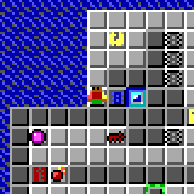

g lander's club
About me
Hi! I'm Zee, or G lander (they/them). I'm somewhat of a ""software developer,"" and I like making things on the internet. I also somewhat enjoy drawing (a lot of the art on this page is original!), though I wouldn't consider myself to be an artist.Things I've made
During my time existing, I've made various things. Here are most of them!
Chips stuff
NotCCAn open-source Chip's Challenge 2 emulator2020-2024I like this game called Chip's Challenge 2! I first played it in 2018, and then in 2020 wanted to play it on Linux, but it wouldn't run because it was an ancient, unmaintained Windows app. And so, I decided to remake Chip's Challenge 2 as a web game, NotCC, which could run anywhere.
After spending years finding edge cases in emulation between the real game and my emulator, NotCC was recognized by the Chip's Challenge speedrunning community to be equivalent to the Steam client, for score purposes. ExaCC (part of NotCC), a speedrunning tool, was developed afterwards.
I now also maintain Railroad, a service for hosting CC2 level solutions, and work on Prewrite NotCC a new-and-improved and more user-friendly version of NotCC.
If you've played the first game and wondered what happened to the sequel, feel free to check out NotCC!
Cookie Clicker stuff
 Cppkies2CashA joke modding framework for a joke toy2021
Cppkies Mod ManagerA mod manager for web Cookie Clicker2020-2021
Cppkies Mod RepositoryA place to upload Cookie Clicker mods. Down since 20212020-2021
asjsA CORS-enabled forwarder for JS hosted on Pastebin2020
Cppkies2CashA joke modding framework for a joke toy2021
Cppkies Mod ManagerA mod manager for web Cookie Clicker2020-2021
Cppkies Mod RepositoryA place to upload Cookie Clicker mods. Down since 20212020-2021
asjsA CORS-enabled forwarder for JS hosted on Pastebin2020
Other stuff
Contact me and links
Feel free to contact me by email: public@glander.club. I have a Discord account with a somewhat guessable username, but please use email unless it is something very urgent.
I don't post on social media, so I don't have anywhere you should follow me, but here are some of my public accounts you can check out:
- Github - the source code for most of my things is hosted there
- YouTube - I sometimes post miscellaneous videos there
- Chip's Challenge Scoreboards - my scores for the various Chip's Challenge sets
Support me
Wow! I'm extremely flattered you're even reading this! If you would like to fund the hosting costs of glander.club, or you just want to show appreciation for something I've made, feel free to send me a one-time donation on...
Well, that's what I would say, but I current cannot accept donations! Come back, say, in mid-October 2024?